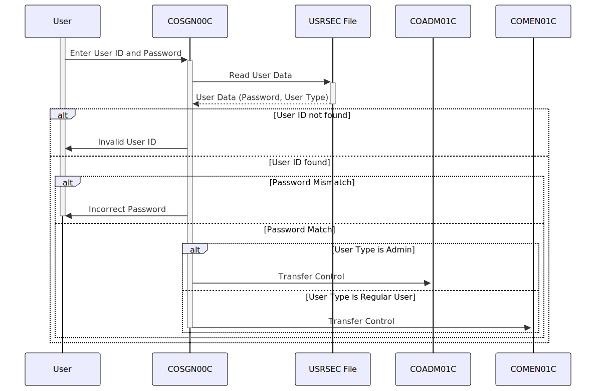

Gerado em: 1º de outubro de 2024
Título do Documento: Aplicativo CardDemo - Especificação do Módulo de Iniciação de Sessão
Descrição Resumida:
Este documento descreve as especificações para o módulo de Iniciação de Sessão (COSGN00C) dentro do aplicativo CardDemo, um sistema baseado em COBOL projetado para gerenciamento de cartão de crédito. O módulo garante autenticação segura do usuário, validando as credenciais do usuário em relação aos dados armazenados. Após a verificação bem-sucedida, ele concede aos usuários acesso ao aplicativo com base em suas funções definidas, direcionando-os para as funcionalidades apropriadas.
Histórias do Usuário: Como Representante de Atendimento ao Cliente, preciso fazer login no aplicativo CardDemo com segurança para poder acessar informações do cliente e realizar transações.
Épico Relacionado: 6 - Gestão de Usuários e Segurança
Requisitos Técnicos:
Exibir Tela de Iniciação de Sessão:
COSGN00 para a estrutura de dados da tela.SEND-SIGNON-SCREEN para enviar a tela para o terminal do usuário.Capturar Entrada do Usuário:
CICS RECEIVE para capturar dados da tela.Validar Credenciais do Usuário:
USRSEC.READ-USER-SEC-FILE para ler dados do usuário do arquivo USRSEC.Determinar o Tipo de Usuário:
SEC-USR-TYPE no arquivo USRSEC.Direcionar o Usuário para o Menu Apropriado:
CICS XCTL para transferir o controle para outros programas (COADM01C para Administrador, COMEN01C para usuários regulares).Modelos Relacionados:
SEC-USER-DATA: Representa o registro do usuário recuperado do arquivo USRSEC.
SEC-USR-PWD: Armazena a Senha criptografada para o usuário.SEC-USR-TYPE: Armazena o tipo de usuário (por exemplo, ‘A’ para Administrador, ‘U’ para Usuário Regular).CARDDEMO-COMMAREA: Área de comunicação usada para passar dados entre programas.
CDEMO-USER-ID: Armazena o ID do Usuário para uso por outros módulos.CDEMO-USER-TYPE: Armazena o tipo de usuário para uso por outros módulos.Configurações:
WS-USRSEC-FILE: Nome do arquivo para o arquivo de segurança do usuário. O valor padrão é USRSEC.WS-TRANID: ID da transação para o módulo de iniciação de sessão. O valor padrão é CC00.Melhorias de Código:
Melhorias de Segurança:
Diagrama Conceitual:
–Made by “Smart Engineering” (by Compass.UOL)–